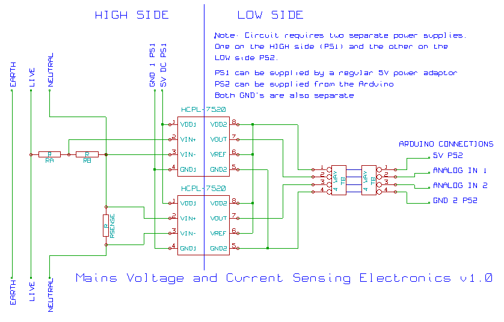

Measuring AC current and voltage using a current sensing resistor (shunt) and voltage divider.
This design is an adaptation of the great work by Cliff Jao and Xi Guo on the PowerBox project.
In comparison with the CT sensor and Voltage adapter method this method requires more care due to components being inserted directly into the high voltage mains wiring. It is suited to smaller power applications. For whole house energy use the CT sensor and Voltage adapter method is a safer and simpler way to go, especially if your new to electronics.
Caution: The circuitry below involves wiring up to high voltage mains electricity. Improper care could result in a potentially fatal electrical shock. When working on this circuit make sure the device is unplugged from the mains socket. The design is distributed in the hope that it will be useful. I take no responsibility for any damage to equipment or injury or death caused by following the information here.
Note: I have had a bit of trouble with the hcpl-7520 optoisolators blowing, and have not revisited the problem as Im no longer using this method. There is discussion page here if your interested in exploring further.

Hardware Design Considerations
Voltage Sensing - Using a voltage divider connected directly between the live and neutral wires to measure voltage.
Current Sensing - Using a current sensing resistor to measure the current flowing in the mains supply.
Isolation - For safety we isolate the electronics connected directly to the mains wiring from the Arduino and computer.
Arduino - Details of how we connect the above to the Arduino and the firmware required for processing.
Bill of Materials is available as a published google documents spreadsheet here.